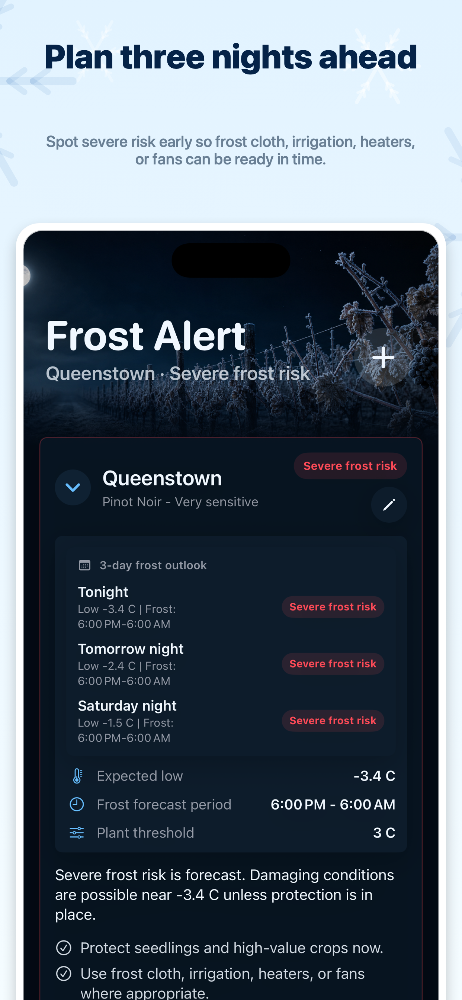
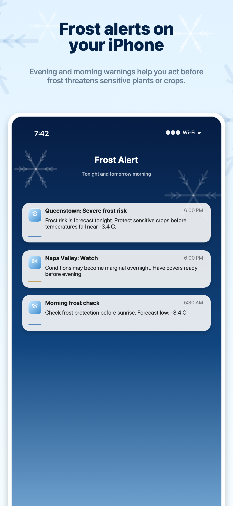
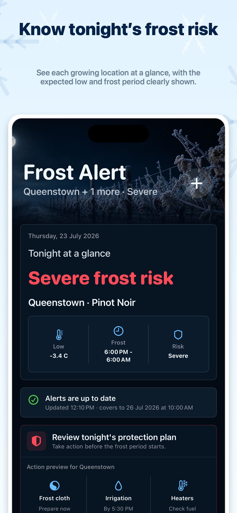
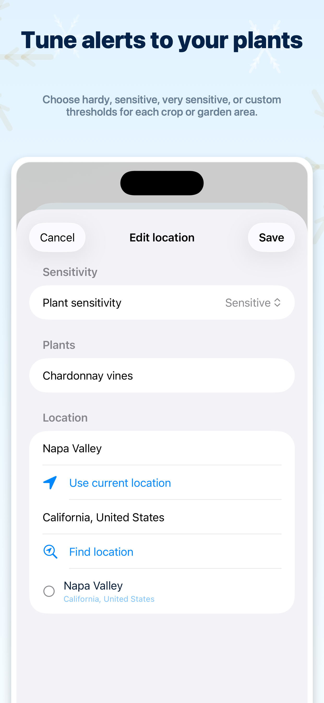

02
Plan three nights ahead.
Open any growing location to see the next three nights, with expected lows, frost periods, and risk levels shown together.

Clear, plant-aware warnings for your garden, crops, orchard, vineyard, or nursery—so you can protect what you grow before temperatures fall.


Made for the people who grow
A clearer cold forecast
Frost Alert turns overnight weather into a simple decision: what is at risk, when the cold is coming, and what you can do now.
Each growing location gets a clear Safe, Watch, Frost likely, or Severe frost risk status, with the expected low and frost period shown up front.
Open any growing location to see the next three nights, with expected lows, frost periods, and risk levels shown together.

Evening and morning notifications help you act before frost threatens sensitive plants or crops.
Edit each location to choose hardy, sensitive, very sensitive, or custom thresholds for each crop or garden area.

Cold nights, clearer decisions
Focused frost guidance for iPhone, powered by Apple Weather.
Learn more about Frost Alert